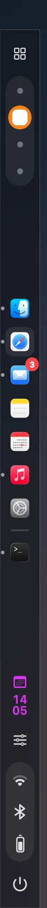
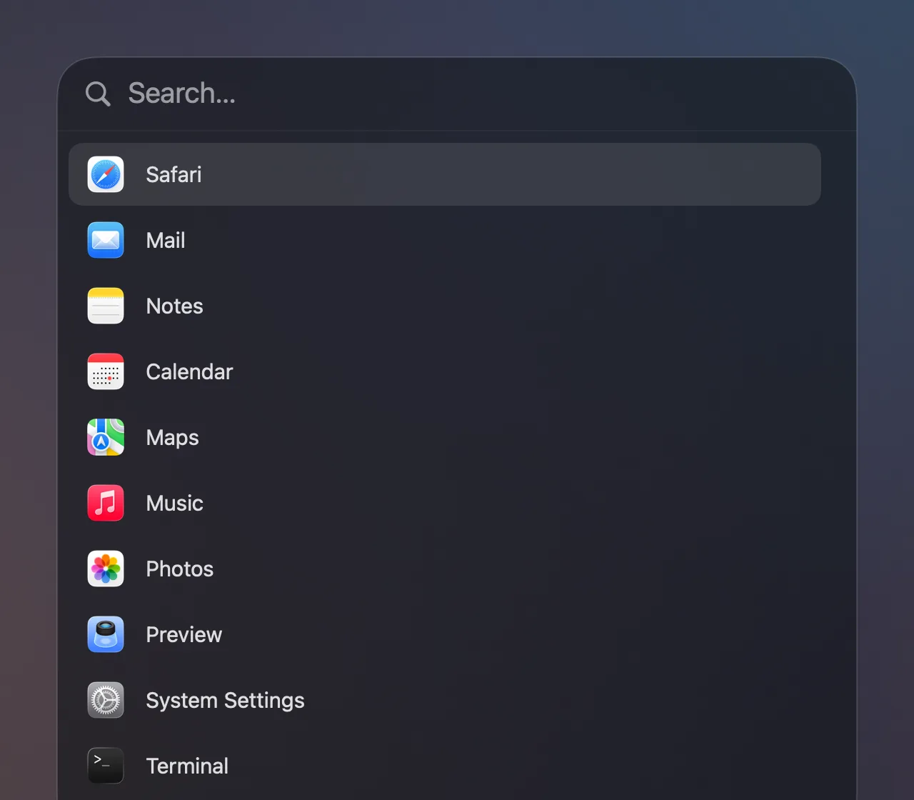
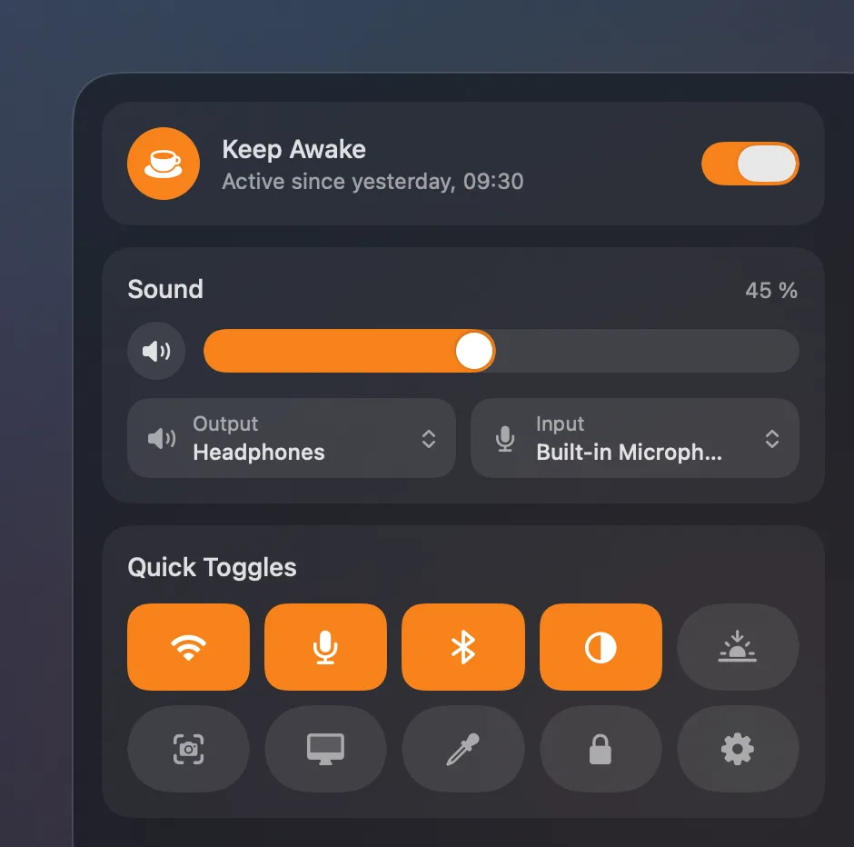
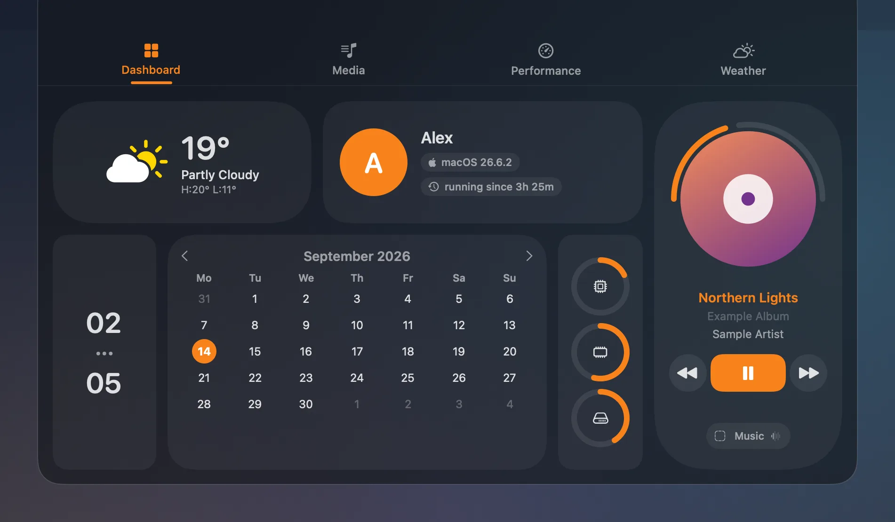

ApolloShell
A desktop shell for macOS Tahoe: sidebar, dock, launcher and dashboard, built from blocks you arrange yourself.
Download for macOS
.dmg
$ brew install silvertree2010/apolloshell/apolloshell

A sidebar down the left edge.
Your dock, Spaces, the clock and status icons, all built from blocks.
A power menu with a mood.
Hover a button. The little planet dozes off, waves goodbye or stops to think.

Type a name and hit Enter.
It learns which apps you actually use, and puts them first.
A control centre tucked in the corner.
Keep your Mac awake, adjust sound, flip toggles, all one click away.

A dashboard that drops from the top.
Weather, your calendar, system resources and whatever's playing, all at a glance.
